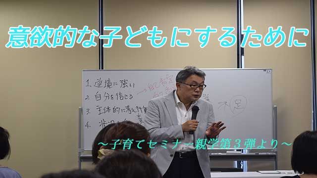
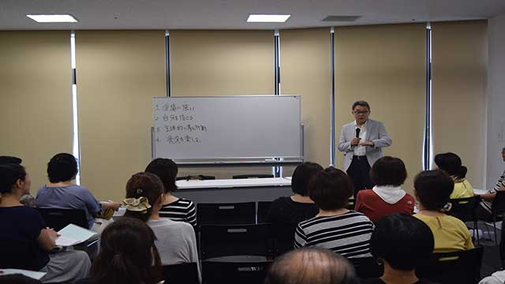

人生で過去一、二番というくらい忙しい2週間でした。
主に研修やセミナーの仕事が立て込んでいたからですが、中に厳密には仕事といえないが興味深い一コマがありました。
私が研修などでお邪魔する高校の、野球部の監督さんから選手たちの練習を見て励ましてくれないか、と頼まれたのです。
監督さんは私の研修を何度か受けてくれた方で熱血指導のすばらしい人です。
きっと選手に刺激を与えたいと思ったのでしょう。野球好きな私としては2つ返事で快諾。喜んで伺わせてもらいました。
時は甲子園を目指しての本番開幕を前日にひかえた朝。少し緊張感ただよう中選手たちはバッティングとピッチングの軽めの練習。
ボールをたたく金属音が耳に心地よく響きます。
地域ではソコソコの強豪校というだけあって選手たちの動きも俊敏な感じ！
「なかなか良いのじゃないですか」と監督にささやくと「ハイ。今年は行けるんじゃないかと。ただ初戦が難しいから…」と表情を引き締めます。高校野球は初戦が固くなりがちで思わぬアクシデントも多いらしいとのこと。初戦を突破すれば、だから勝ち進めるのだという自信が伺えました。
2時間ほどして練習は終了。集まった選手たちを前に監督から紹介を受け私が話す。グランドといういつもと勝手が違う中、私もいささか緊張が走り言葉がなめらかに出てこない。
「明日は持ってる力を全て出し切って…下さい。悔いのないように全力で…ガンバッて下さい」と何ともありきたりの、つまらない励まし（汗）。それでも選手たちは真剣な表情で聞いてくれました。（マァ、突然現れた見慣れぬオッサンに内心では戸惑いがあっただろうが）
さて翌日は仕事先でも試合が気になって仕方ありません。何度か中座して（失礼！）ネットで試合経過を確認。すると中盤まで大量リード。ホームランも何本か出ています。
「これはコールド勝ちかも」と私は少し安心して戻りました。
ところが、後でチェックしてみると終盤に逆転されてまさかの敗戦！！
前日の子どもたちの真剣な眼差しがよみがえり、「勝たせてやりたかったなア」という思いと監督さんや選手たちの力になれなかったという気持ちがこみ上げてきました。
とはいえ、負けることもときには大事な体験。きっと彼らはこれを糧にその後の人生を力強く歩んでくれるでしょう。
私にとっても貴重な体験でしたね。ありがとう。

さて話は変わって、三連休最終日は「子育てセミナー 親学第3弾」。テーマは「意欲的な子どもにするために」。猛暑の中会場には満員の保護者の皆様。
4月から始まった「親学」の3回目ということで、今回は少しディープな話になった。
「意欲的な子どもとはどんな子でしょう？」
以前のセミナーでこう聞くと「言われなくても自分から進んでやる子です」とひとりのお母さんが答えたが、まさに多くの親はそう答えるでしょう。
言われなくても自ら学校や塾の宿題をやり、部活や友人との交流も積極的にこなし計画的に行動する。そして親や先生の手をわずらわせない。つまり模範生ですね！！
これは要するに親にとって「都合の良い方向に意欲的」ということです。
しかし私の言う意欲的な人間とはそんな型にはまった優等生ではなく、既存の価値観、既存のルール、既存の体制そのものに疑問をもち、常に改善改革を目指し、世のため人のために活動する人間です。
お分かりのようにそれには多くの困難抵抗を伴うでしょう。それでも今の時代もっとも必要とされる人物像です。
親や先生など大人にとって都合の良い子どもであってはならないということです。
…とマァこんな具合に色々なエピソードを交えてお話しさせていただいたわけです。
参加された皆さまの表情から趣旨は伝わったかなと感じました。
それにしてもセミナーをやる度に、親の皆さんがいかに真剣に子の将来を思い子育てに悩まれているか痛感します。
まさに親の愛は海より深いと感じます。
そんな親たちに「気づき」や「ヒント」を得てもらえたら私も嬉しい。気持ちが軽くなり明日への活力がわいてくる。そんな会になったら最高だという思いで行いました。
子育ての参考になったら幸いです。
いやあ、それにしても毎日暑い！
皆さん熱中症にはくれぐれも気をつけましょう。
というわけで中断中のブログ「願望を実現するための…」は今回もお休みです。次回までお待ち下さいませ。